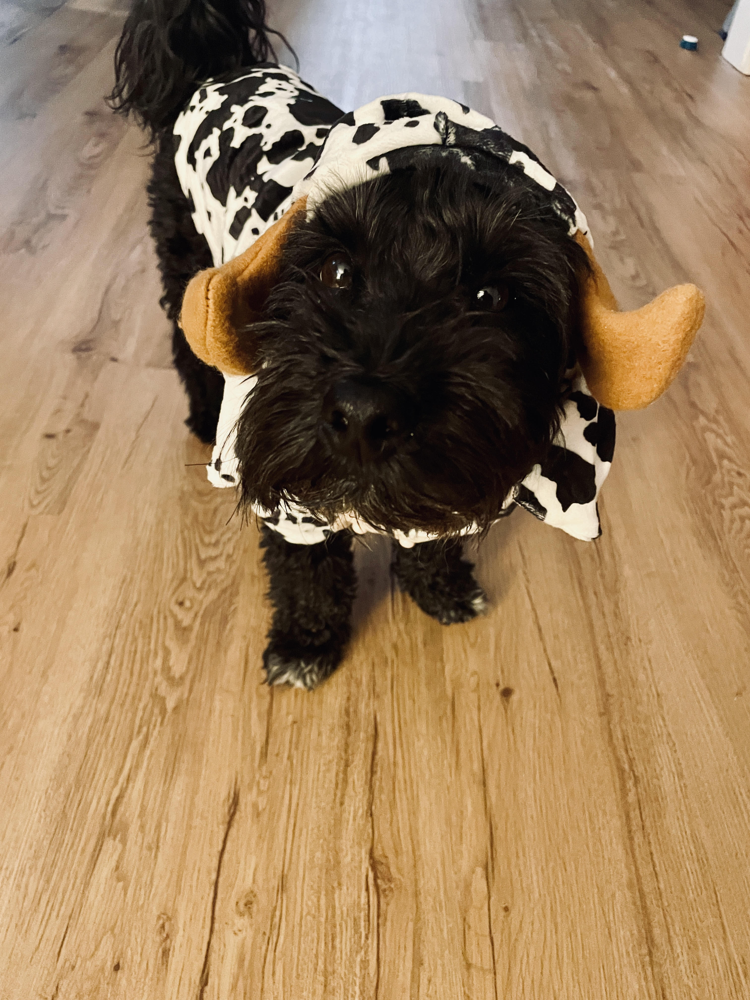

Editing Images of my Dog Cooper Whiteshoes
Park Cooper


image has been cropped
Cabin Cooper


image has been saved as jpeg
Hungry Cooper


image has been flipped
Cooper at Lake Superior


image has been resized
Holy Cow is that Cooper?

image has been rotated 15 degrees clockwise